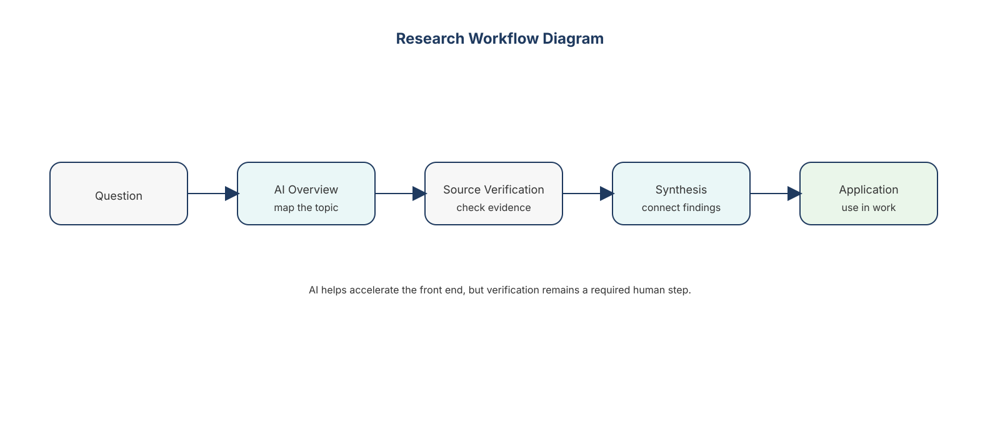
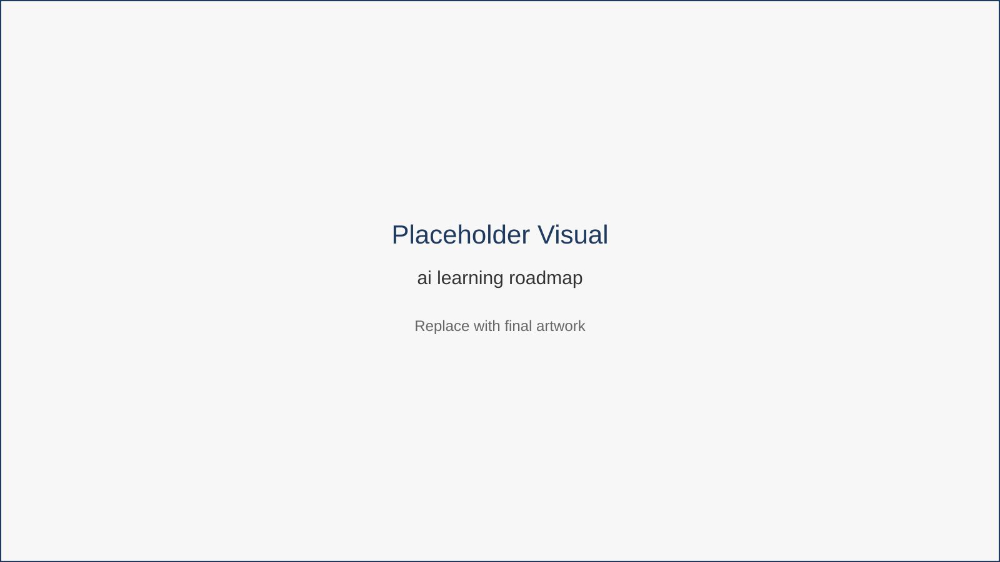

Research, Learning, and Knowledge Work
Remote professionals spend a large portion of their time gathering information.
Reading reports.
Scanning industry news.
Researching competitors.
Learning new tools.
Without a structured approach, research easily becomes a time sink.
AI changes how research happens.
AI as a Research Assistant
AI tools can rapidly:
- summarize articles or reports
- generate research overviews
- compare tools or strategies
- extract key insights from documents
Instead of manually scanning large volumes of content, professionals can begin with AI-generated summaries, then investigate deeper where necessary.
The structure of this process becomes clearer when visualized as a research workflow.

Figure 8.1 — Research Workflow Diagram
This workflow demonstrates how AI accelerates the early discovery phase of research. AI provides rapid overviews and summaries, while human professionals verify sources and apply insights.
AI also supports continuous learning as professionals adapt to new tools and evolving technologies.

Figure 8.2 — AI Learning Roadmap
This roadmap illustrates how professionals can build knowledge progressively: starting with exploration, then structured learning, and eventually integrating new capabilities into daily work.
Fictional Example
Mei is a remote analyst responsible for preparing market summaries.
Previously, she spent days scanning industry reports.
Now her workflow looks like this:
Ask AI for a high-level overview of trends.
Identify key topics and sources.
Verify insights using original documents.
Produce the final analysis.
Research that once required several days now takes a few hours.
Key Insight
AI accelerates the discovery phase of research, allowing professionals to spend more time interpreting insights.
Chapter Takeaways
- AI excels at summarizing large amounts of information.
- Verification remains essential to avoid misinformation.
- The best use of AI is to accelerate discovery, not replace expertise.
Action Plan
Choose a topic related to your work.
Ask AI to:
- summarize key trends
- list important tools or concepts
- recommend sources for deeper reading
Then verify the most important claims.
Transition
Writing and research represent analytical work.
But many remote professionals also produce creative outputs such as presentations, visual assets, or content. AI is transforming these activities as well.